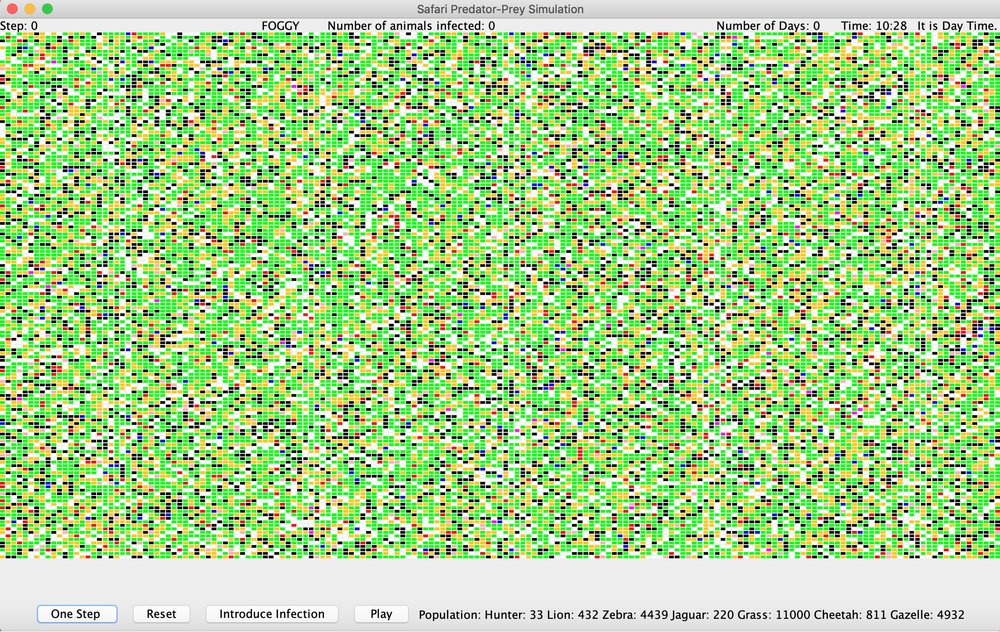
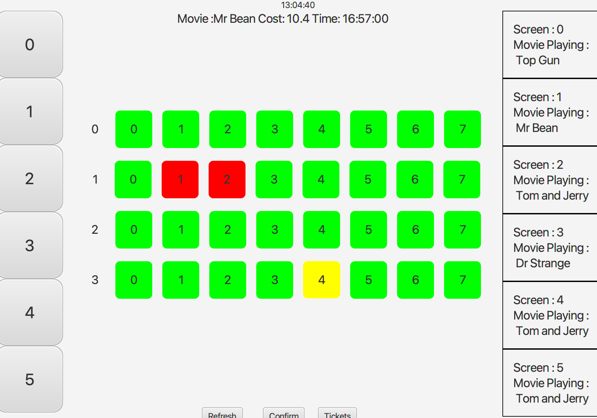
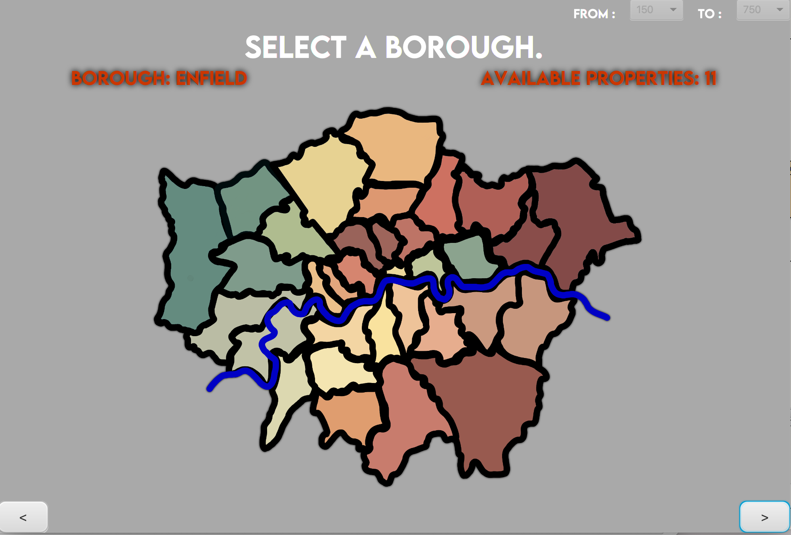

I am a current second year student studying Computer Science at King's College London. I am eager to learn new skills used in the different sectors of technology.This website showcases all the projects I have created throughout the years!
 I created a predator prey simulation using Java. This program allows you to see how different weather and infection can affect the stability of the wildlife population. Each animal is given a colour and can breed and catch infection stimulating the behaviour of animals in the wildlife. Users can change weather probability, breeding probability and litter size to see how this would effect the population. This simulation also contains hunters mimicking hunters hunting in the wildlife. All animals hunt during the day, and sleep during the night. Cheetahs, Jaguars, and Lions don't eat grass but are allowed to move on top of it to reach their prey. The animals and hunter’s percentages of finding prey are determined by the weather where if it is sunny, they have a higher chance of finding prey and a lower chance of finding prey if it is foggy. Grass is also influenced by the weather and will die if certain conditions are not met. All animals can move, eat, breed & die from old age, disease, or lack of food. Plants can grow & die from lack of sunlight, water, or old age. Both animals & plants have a growth rate based on their age so their food value when other animals eat them increases.
 I created a cinema booking application using Java. This program loads the screens and the movies it plays at different times from a csv file. Movies are also displayed from a civ file which contains the name of the movie and the price per ticket. It then displays the movies based on the time. The users can switch through screens and select a movie they want to watch and the seat they would like to sit in. The seats are colour coded based on availability where red is booked, yellow is pending and green is available. A seat will be pending if the user hasn't pressed the confirm button. Once the confirm button is pressed, a ticket is loaded which contains information about the price, and the seat they have selected. They can refresh the screen by pressing the refresh button which checks the current time and determines which movie should be displayed.( It ensures it doesn't display a movie which has already started or finished)
 I created an airbnb application using Java. This program loads the available properties and the information from a csv file. The users can select what price range they would like. They then see the map pane, which when you hover over the different boroughs shows how many properties are available. The colours of the text are colour coded in a way such that the borough with the fewest number of properties is dark red and the borough with the most number of properties is bright green. They can select on a borough which opens a drop down list of the properties available in that borough. Users can favourite a property by clicking the favourite button. Users can also see statistics about the properties and they can also see the location of it through google maps. Finally users can book any of the favourited properties through the booking pane, where they enter the dates they want to book it for, and a confirmation ticket is displayed.
I created a path finder which works out the fastest route to reach a destination by avoiding any obstacles. Users can specify the location of the obstacles or randomly generate obstacles, the program then works out the shortest path, and displays the coordinates one at a time leading up to the final destination.
I created a text-based adventure game using Java, where users can interact with characters and items in different rooms. The player can pick up items and add it to their bag as long as it doesn't exceed the bag limit. They can give characters items in return for clues. The aim of the game is to defeat the dragon and rescue the trapped people. The player has to enter various commands which are displayed when they are introduced to the game. They can type help for further help.